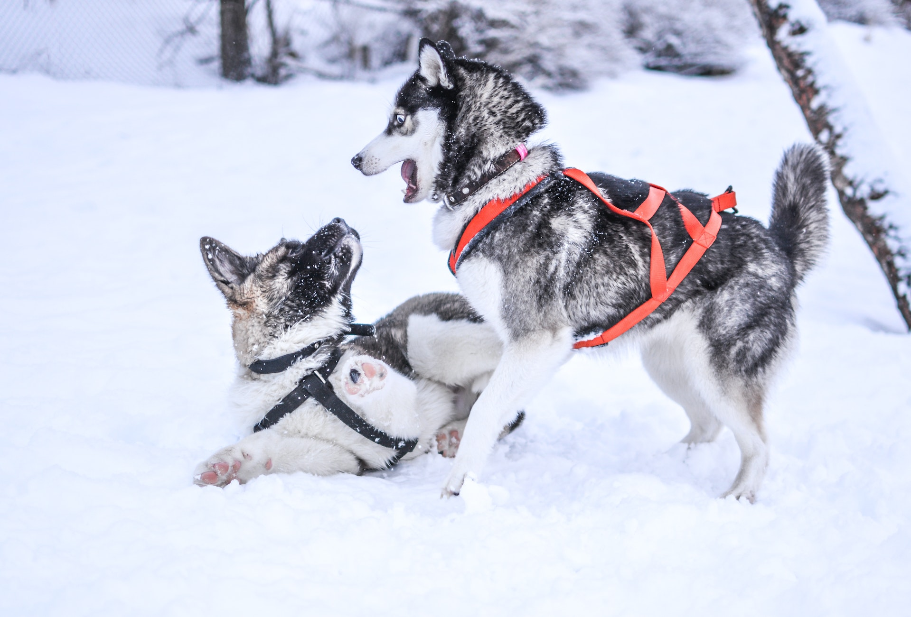

La historia de los perros se remonta a más de 15,000 años atrás, cuando los lobos se acercaron a los asentamientos humanos en busca de comida y comenzaron a tener una relación cercana con las personas. Los humanos comenzaron a domesticar a los lobos, seleccionando aquellos con rasgos deseables, como una mayor docilidad, y criándolos para ser más útiles como animales de compañía, de trabajo y de caza.
Con el tiempo, se desarrollaron diferentes razas de perros, cada una con sus propias características y habilidades específicas. Los perros han desempeñado muchos roles importantes en la historia de la humanidad, como ayudar en la caza, proteger a los humanos y sus hogares, servir como animales de carga, pastorear ganado, y acompañar a las personas como animales de compañía.
En la actualidad, los perros son una de las mascotas más populares en todo el mundo, y se han convertido en una parte importante de la cultura humana. Los perros han sido entrenados para desempeñar una amplia variedad de tareas, incluyendo la detección de drogas, la asistencia a personas discapacitadas y la búsqueda y rescate en situaciones de emergencia.